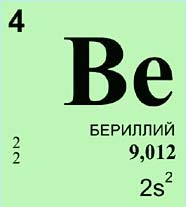

Бериллий
Открыт в 1798 году французским химиком Луи Никола Вокленом, который назвал его глюцинием. Современное название элемент получил по предложению химиков немца Клапрота и шведа Экеберга. Большую работу по установлению состава соединений бериллия и его минералов провёл русский химик Иван Авдеев. Именно он доказал, что оксид бериллия имеет состав BeO, а не Be2O3, как считалось ранее.
Большую работу по установлению состава соединений бериллия и его минералов провёл русский химик Иван Авдеев. Именно он доказал, что оксид бериллия имеет состав BeO, а не Be2O3, как считалось ранее.
В свободном виде бериллий был выделен в 1828 году французским химиком Антуаном Бюсси и независимо от него немецким химиком Фридрихом Вёлером. Чистый металлический бериллий был получен в 1898 году французским физиком Полем Лебо с помощью электролиза расплавленных солей.